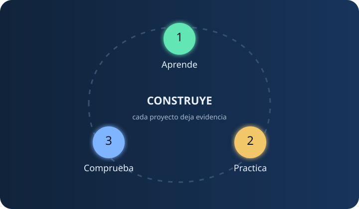

APRENDE · PIENSA · CONSTRUYE
Tu laboratorio para crear tecnología.
Una ruta progresiva desde el primer algoritmo hasta sistemas completos, con proyectos y un tutor que explica el porqué.

RUTA ADAPTATIVA
El siguiente paso, no todo a la vez.
PROYECTO CENTRAL
Aprender haciendo.
Define una idea, descubre el conocimiento necesario y demuestra el resultado con evidencias.
EN PREPARACIÓNTu primer sistemaDiseña · implementa · comprueba